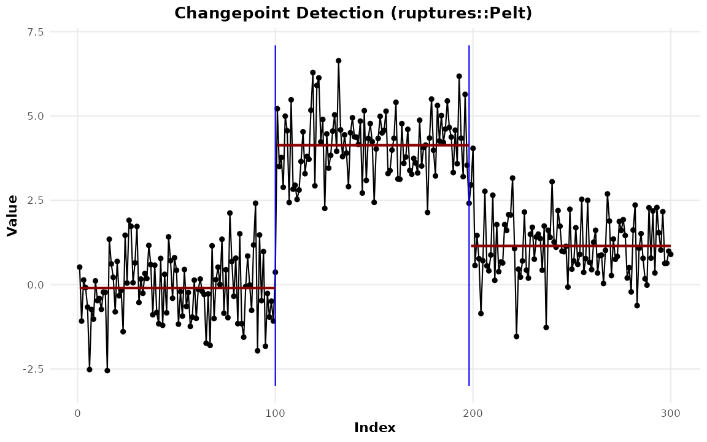
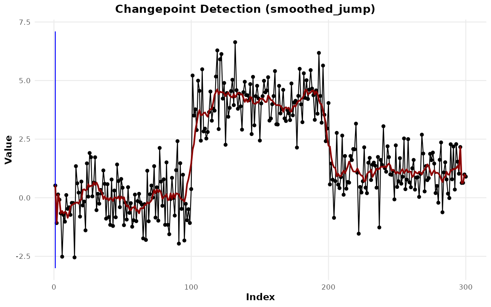

Extending ggchangepoint
Youzhi
Yu
University of Chicago
Source: vignettes/extending.Rmd
extending.RmdThis package wraps fifty detectors. It will never wrap all of them,
and some of the most interesting ones it cannot wrap:
changeforest (Londschien et al.
2023) is on conda-forge only, ChangepointInference
(Jewell et al. 2022) is on GitHub only,
gfpop and cpss were removed from CRAN,
deep-learning detectors live in Python, and your in-house method lives
with you.
That is a smaller problem than it looks, because almost nothing in
this package is about the detectors. autoplot(), the geoms,
tidy(), glance(), augment(),
cpt_metrics(), cpt_consensus(),
cpt_stability(), cpt_benchmark() and
cpt_report() all speak to the ggcpt contract,
not to any engine. Two functions let anything into it.
as_ggcpt(): changepoints in, result out
The one-off case: you have locations from somewhere else and want the package’s machinery.
set.seed(2026)
x <- c(rnorm(100), rnorm(100, 4), rnorm(100, 1))
# Pretend these came from a Python detector, a paper, or an analyst.
external <- c(101, 199)
fit <- as_ggcpt(external, x, method = "ruptures::Pelt",
cp_convention = "right")
fit
#> ggcpt (changepoint detection result)
#> Method: ruptures::Pelt
#> Change in: mean
#> Changepoints found: 2
#> CP convention: left
#> Penalty: user
#> Series length: 300
#>
#> Changepoints:
#> # A tibble: 2 × 2
#> cp cp_value
#> <int> <dbl>
#> 1 100 0.369
#> 2 198 2.41cp_convention = "right" matters: some engines report the
first index of the new segment and some the last index of the old one,
and getting it wrong shifts every location by one. The conversion
happens on the way in, so the stored result is always on this package’s
convention.
Everything now works:
tidy(fit)
#> # A tibble: 2 × 2
#> cp cp_value
#> <int> <dbl>
#> 1 100 0.369
#> 2 198 2.41
glance(fit)
#> # A tibble: 1 × 9
#> n n_changepoints method change_in penalty_type penalty_value cp_convention
#> <int> <int> <chr> <chr> <chr> <dbl> <chr>
#> 1 300 2 ruptu… mean user NA left
#> # ℹ 2 more variables: total_cost <dbl>, runtime <dbl>
cpt_metrics(tidy(fit)$cp, truth = c(100, 200), n = 300)
#> # A tibble: 1 × 12
#> n n_pred n_truth precision recall f1 covering hausdorff rand_index
#> <int> <int> <int> <dbl> <dbl> <dbl> <dbl> <dbl> <dbl>
#> 1 300 2 2 1 1 1 0.987 2 0.980
#> # ℹ 3 more variables: annotation_error <int>, mae_matched <dbl>,
#> # rmse_matched <dbl>
autoplot(fit, show_segments = TRUE)
as_ggcpt() runs the same contract checks as every
built-in wrapper — sorting, de-duplication, range checks, aligned extra
columns, derived segments — so an external result cannot violate the
invariants the rest of the package relies on:
It also takes the optional extras, so a detector that reports uncertainty does not have to throw it away:
cpt_register_method(): dispatch by name
The repeatable case: you want
cpt_detect(x, method = "yours") and everything that keys
off a method name.
cpt_register_method(
"biggest_jump",
fn = function(x, window = 1, ...) {
d <- abs(diff(as.numeric(x)))
which.max(stats::filter(d, rep(1, window) / window, sides = 2))
},
change_in = "mean",
engine = "example",
citation = "No citation supplied (illustration only)."
)
res <- cpt_detect(x, method = "biggest_jump", window = 5)
res
#> ggcpt (changepoint detection result)
#> Method: biggest_jump [user-registered]
#> Change in: mean
#> Changepoints found: 1
#> CP convention: left
#> Penalty: MBIC
#> Series length: 300
#>
#> Changepoints:
#> # A tibble: 1 × 2
#> cp cp_value
#> <int> <dbl>
#> 1 92 1.47
#>
#> This result came from a user-registered detector; the package validated
#> its shape, not its statistics. See ?cpt_register_method.Note what the print method says. A registered method is visibly user-supplied everywhere it appears:
subset(cpt_methods(), status == "registered")
#> # A tibble: 1 × 15
#> method change_in engine status installed target_release multivariate
#> <chr> <chr> <chr> <chr> <lgl> <chr> <lgl>
#> 1 biggest_jump mean example register… NA NA FALSE
#> # ℹ 8 more variables: univariate <lgl>, online <lgl>, ci <lgl>, fitted <lgl>,
#> # posterior <lgl>, statistic <lgl>, path <lgl>, scale_space <lgl>
cpt_cite("biggest_jump")
#> [biggest_jump] No citation supplied (illustration only).The package validates the shape of what your function
returns; it does not and cannot validate the method. That distinction is
the reason for the labelling, and it is why cpt_cite() says
plainly when no citation was given rather than inventing one.
Registered methods take part in everything that keys off a method name:
cpt_consensus(x, methods = c("pelt", "binseg", "biggest_jump"),
min_votes = 2)
#> ggcpt_consensus (3 methods, tolerance 5, threshold 2 vote(s))
#> Methods: pelt, binseg, biggest_jump
#> Consensus changepoints: 2
#>
#> # A tibble: 2 × 5
#> cp cp_value votes methods spread
#> <int> <dbl> <int> <chr> <int>
#> 1 100 0.369 3 biggest_jump, binseg, pelt 0
#> 2 200 4.04 2 binseg, pelt 0
#>
#> Agreement is a robustness display, not a significance test; see ?cpt_consensus.
cpt_benchmark(cpt_datasets(n = 200, seed = 1, names = c("step", "teeth")),
methods = c("pelt", "biggest_jump"), progress = FALSE)
#> ggcpt_benchmark (2 dataset(s) x 2 method(s), tolerance 5)
#>
#> Mean rank across datasets (1 = best):
#> # A tibble: 2 × 4
#> method mean_rank n_datasets n_datasets_total
#> <chr> <dbl> <int> <int>
#> 1 pelt 1.25 2 2
#> 2 biggest_jump 1.75 2 2
#>
#> # A tibble: 4 × 4
#> dataset method covering f1
#> <chr> <chr> <dbl> <dbl>
#> 1 step pelt 0.952 1
#> 2 teeth pelt 1 1
#> 3 step biggest_jump 0.362 0
#> 4 teeth biggest_jump 1 1
cpt_unregister_method("biggest_jump")Registration is session state. It is deliberately not persisted to disk: a script that behaved differently depending on what some earlier script had run would be worse than the problem it solved.
Returning a finished result
fn may return a bare vector of indices, as above, or a
finished ggcpt built with as_ggcpt() — which
is how you pass along an engine’s confidence intervals, fitted signal or
raw fit object:
cpt_register_method(
"smoothed_jump",
fn = function(x, ...) {
sm <- stats::filter(x, rep(1, 11) / 11, sides = 2)
sm[is.na(sm)] <- x[is.na(sm)]
as_ggcpt(which.max(abs(diff(sm))), x, fitted = as.numeric(sm))
},
engine = "example"
)
autoplot(cpt_detect(x, method = "smoothed_jump"), show_fit = TRUE)
cpt_unregister_method("smoothed_jump")Recipe: a Python detector through reticulate
ruptures is the standard Python changepoint library. The
recipe is four lines, and this package never depends on
reticulate to support it:
library(reticulate)
rpt <- import("ruptures")
cpt_register_method(
"ruptures_pelt",
fn = function(x, model = "l2", pen = 10, ...) {
algo <- rpt$Pelt(model = model)$fit(matrix(as.numeric(x), ncol = 1))
# ruptures returns 1-based *right* endpoints, with n as the last entry
as.integer(unlist(algo$predict(pen = pen)))
},
change_in = "mean",
engine = "ruptures (Python)",
cp_convention = "left",
citation = paste("Truong, C., Oudre, L. and Vayatis, N. (2020).",
"Selective review of offline change point detection",
"methods. Signal Processing, 167, 107299.")
)
cpt_detect(x, method = "ruptures_pelt", pen = 20)The same shape works for a detector loaded from GitHub, a compiled
binary called through system2(), or a neural network scored
in torch: if it returns changepoint indices, it joins the
grammar.
Reducing the install
The other side of extensibility is not needing everything. Only three
engines are hard dependencies. cpt_methods() reports what
is installed, and cpt_install_engines() installs a family
at a time:
cpt_install_engines("bayesian")
cpt_install_engines(c("highdim", "functional"), dry_run = TRUE)
tab <- cpt_methods()
table(status = tab$status, installed = tab$installed, useNA = "ifany")
#> installed
#> status TRUE <NA>
#> available 50 0
#> planned 0 5What the contract is
If you are writing a wrapper of your own, this is the whole contract,
and as_ggcpt() enforces all of it:
-
$changepointsis a tibble with at leastcp(integer, sorted, de-duplicated, in1..n-1, on the “left” convention) andcp_value; engine extras such asci_lower/ci_upperorposterior_probare additional columns aligned to those rows. -
$segmentshas one row per segment (seg_id,start,end,n,param_estimate) and always has one more row than$changepoints. -
$datahasindex(positions1..n) andvalue, plusfittedwhen an engine supplies a signal andindex_valuewhen the result carries a time index. -
$method,$change_in,$penalty,$cp_conventionare length-one metadata;$fitis the raw upstream object. - The optional slots —
data_wide,index,regions,diagnostics,registered— are absent unless something supplies them, sois.null(fit$regions)is the test for “this engine does not do regions”.